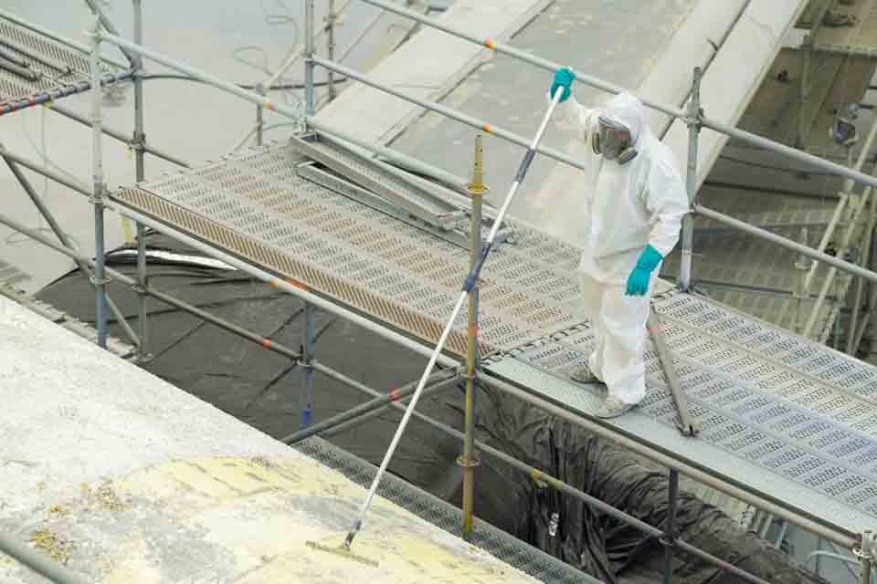
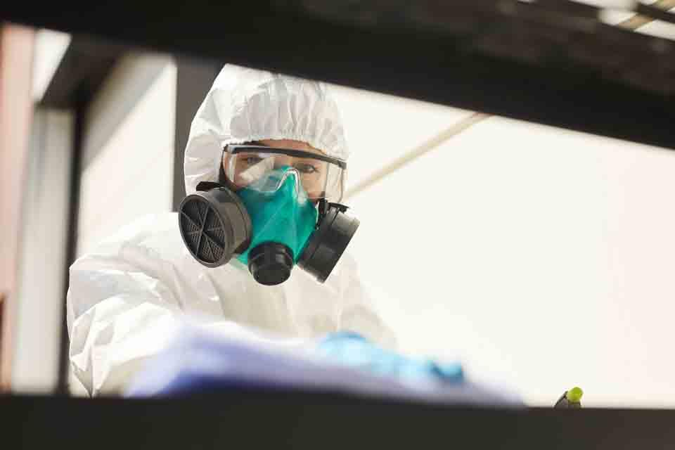
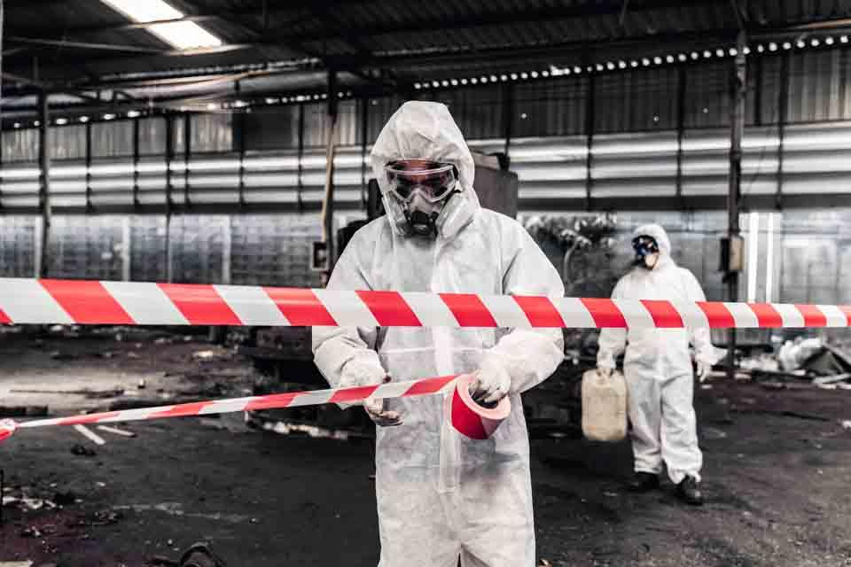
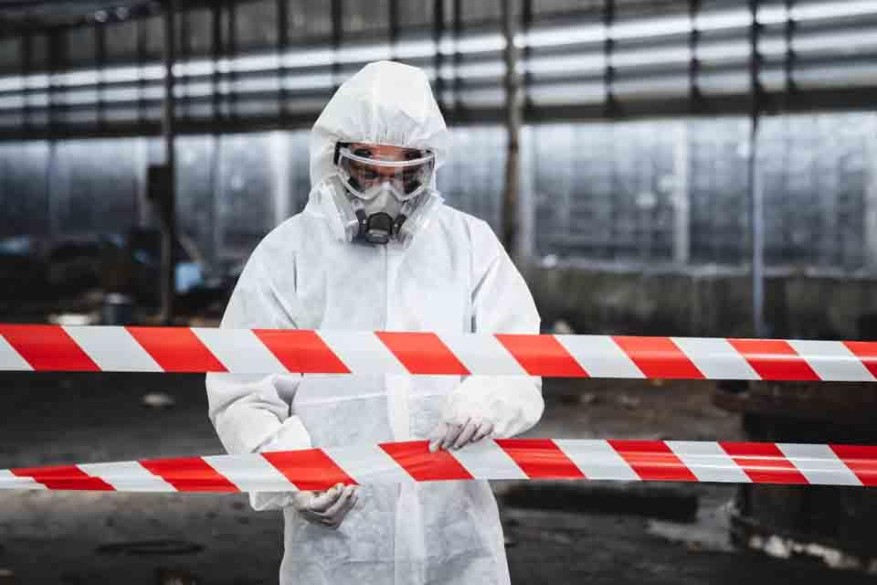
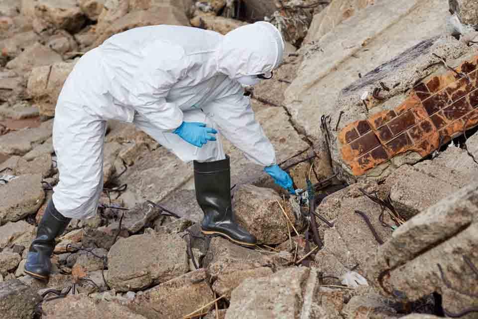
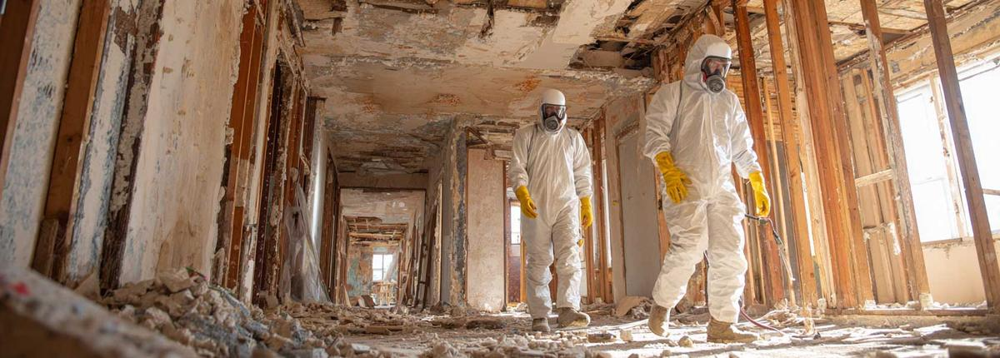

Get connected with local Auckland contractors for residential asbestos testing and removal — roofing, cladding, baseboards and soffits. Fast, free quotes.
An Auckland-wide asbestos removal referral service.
Look, nobody wakes up thinking “today’s a great day to deal with asbestos.” But if you’re renovating an older Auckland home or planning a demo job, there’s a good chance you’re going to find it. And when you do, you need people who actually know what they’re doing.
Asbestos Removal of Auckland is a referral website that helps homeowners and builders find experienced local asbestos contractors. Submit one enquiry and an independent contractor will get in touch — no drama, no shortcuts, just proper removal by people who’ve seen it all.

Residential asbestos removal services are essential for homeowners looking to guarantee a safe living environment. Local contractors provide thorough inspections and safe removal processes tailored to your needs.

Wet methods, containment and approved disposal for asbestos roofing.
Learn more →
Sampling and inspection to identify asbestos before renovation or demolition.
Learn more →
Safe removal of fibro and asbestos-cement cladding using specialised equipment.
Learn more →

Whole-home inspections and safe removal that protect your family.
Learn more →Asbestos is everywhere in Auckland homes built before 2000 — roofs, cladding, old fibro walls, even textured ceilings. Most people enquire when they’ve started a reno and hit something that looks dodgy. Smart move.
We connect you with experienced independent asbestos contractors in your area, so you don’t have to chase multiple quotes.
You deal directly with the contractor, who assesses the job and provides an itemised quote — free and with no obligation.
DIY asbestos removal isn’t just risky — the fibres are microscopic and once airborne you’re breathing them in for hours.

Asbestos, a once-popular building material, poses significant health risks. When disturbed, asbestos fibres can become airborne, leading to serious respiratory diseases including asbestosis and mesothelioma. These conditions often develop over years, making early detection challenging.
Even small amounts can be harmful, especially in older buildings. If you suspect asbestos in your property, don’t take chances — get the necessary inspections and removals done properly and professionally.
Asbestos testing and inspection is an essential first step in any renovation or demolition. Contractors identify asbestos-containing materials and assess their condition, then guide you through safe removal if asbestos is found.
Our network of independent contractors covers every Auckland region.
Yes. We connect enquiries across all of Auckland — North Shore, Central, West and East Auckland.
Asbestos testing, roof, cladding, soffit, baseboard and textured ceiling removal, plus residential and commercial asbestos removal and disposal — carried out by local, independent contractors.
Costs depend on the type, amount and location of the material and access. The contractor provides an itemised quote after assessing the job so you know exactly what you’re paying for.
DIY removal is dangerous and tightly regulated. The fibres are microscopic and once airborne you can breathe them in for hours, so we strongly recommend using an experienced asbestos contractor.
This is a referral website. Your enquiry is passed to a local, independent asbestos contractor, who will contact you, assess the job and provide a quote.
Concerned about asbestos in your property? Fill out the form and a local contractor will be in touch for a free consultation.
Call us or request a quote — a local contractor will get back to you ASAP.
Call 09 873 7082